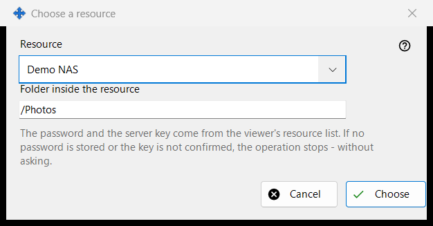
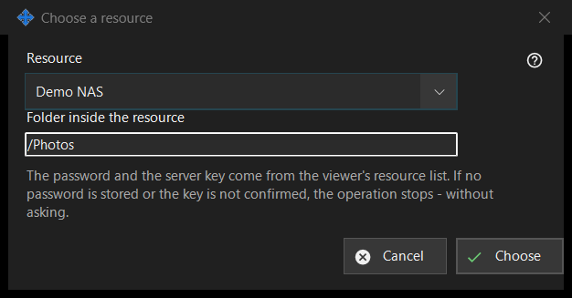

Choose a resource
What this is for
Picks a resource from the viewer's resource list as the source or destination of a scheduled operation. It opens from 'Resource..' next to Source or Destination in the scheduled operation window.


In this order
- Choose the resource in the 'Resource' list.
- Check or change 'Folder inside the resource'; it starts at the resource's root folder.
- Press 'Choose'. 'Cancel' keeps the previous place.
The elements
Resource list
Only the SFTP servers and network folders of the viewer's list are offered, sorted by name; resources of other kinds do not appear. With none, the window says: 'There are no suitable resources in the resource list. Add an SFTP server or a network folder in the viewer.' and 'Choose' stays disabled. Adding or re-trusting a resource happens in the viewer; this window makes no connection.
Folder inside the resource
The folder must lie inside the root of the chosen resource, otherwise Save in the operation window refuses it. Choosing another resource refills the box with that resource's root.
Runs without questions
The password and the server key come from the viewer's resource list. A run asks nothing: if the password is not stored or the server key is not confirmed, the operation stops and the history says why. A read-only resource cannot be the target of a move or delete, a resource whose root is protected by a PIN is refused, and an archive takes ordinary folders only.
Manager settings · SFTP sharing settings · Exchange server settings